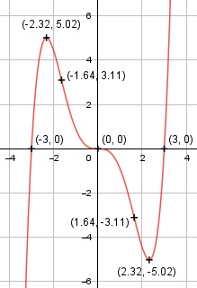

Aufgabe 62 f(x) = (1/9)5 - x3 f'(x) = (5/9)x4 - 3x2 + 6, f''(x) = (20/9)x3 - 6x, f'''(x) = (20/3)x - 6 Definitionsbereich: -∞ < x < ∞ Wertebereich: -∞ < f(x) < ∞ Asymptoten: - Symmetrie zur y-Achse bzw. zum Punkt (0|0): f(-x) = (5/9)(-x)5 – (-x)3 f(-x) = -(5/9)x5 + x3 ≠ f(x) --> keine Achsensymmetrie -f(-x) = -(-(5/9)x5 + x3) -f(-x) = (5/9)x5 - x3 = f(x) --> Punktsymmetrie nur ungerade Exponenten von x Nullstellen: f(x) = 0 (1/9)5 - x3 = 0 |*9 5 - 9x3 = 0 x3 * (x2 - 9) = 0 x3 = 0 x1,2,3 = 0 --> Sattelpunkt x2 - 9 = 0 |+9 x2 = 9 |ⱱ x4,5 = ± 3 N1,2,3 (0|0), N4(3|0), N5(-3|0) Schnittpunkt mit der y-Achse: x = 0 f(0) = (1/9) * 05 - 03 = 0 Sy(0|0) Extrempunkte: f'(x) = 0 (5/9)x4 - 3x2 = 0 | *9 5x4 - 27x2 = 0 x2 * (5x2 - 27) = 0 x2 = 0 x1,2 = 0 5x2 - 27 = 0 |+27 5x2 = 27 |:5 x2 = 5,4 |ⱱ x3,4 = ± 2,32 f(2,32) = (1/9) * (2,32)5 - 2,323 = -5,02 f(-2,32) = 5,02 wegen Punktsymmetrie f''(0) = (20/9) * 03 - 6 * 0 = 0 f''(2,32) = (20/9) * 2,323 - 6 * 2,32 > 0 --> Tiefpunkt (2,32|-5,02) f''(-2,32) = (20/9)*(-2,32)3 - 6*(-2,32) < 0 --> Hochpunkt (-2,32|5,02) Wendepunkte: f''(x) = 0 (20/9)x3 - 6x = 0 |*9 20x3 - 54x = 0 x * (20x2 - 54) = 0 x1 = 0, f(0) = 0 20x2 - 54 = 0 |+54 20x2 = 54 |:20 x2 = 2,7 |ⱱ x2,3 = ± 1,64 f(1,64) = (1/9) * 1,645 - 1,643 = -3,11 f(-1,64) = 3,11 wegen Punktsymmetrie f'''(0) = (20/3) * 02 - 6 ≠ 0, f'(0) = 0, f''(0) = 0 --> Sattelpunkt (0|0) f'''(1,64) = (20/3) * 1,642 - 6 ≠ 0 --> Wendepunkt (1,64|-3,11) f'''(-1,64) = (20/3) * (-1,64)2 - 6 ≠ 0 --> Wendepunkt (-1,64|3,11) Graph:
